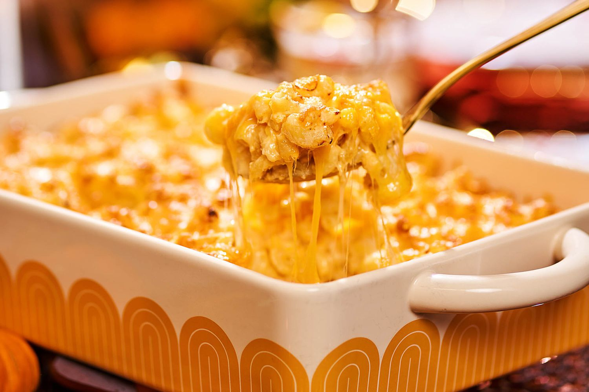

Mac n Cheesy

When it comes to comfort food, nothing tops macaroni and cheese, especially Martha's easy-to-make version. It uses two cheeses, sharp white Cheddar and Gruyère. The recipe is broken down into very simple steps; guiding you through making breadcrumbs, stirring up the cheese sauce, cooking the macaroni, assembling the dish, and baking.
Ingredients
- 8 tablespoons (1 stick) unsalted butter, plus more for dish
- 6 slices good white bread, crusts removed, torn into 1/4- to 1/2-inch pieces
- 5 1/2 cups milk
- 1/2 cup all-purpose flour
- 2 teaspoons salt
- 1/4 teaspoon freshly grated nutmeg
- 1/4 teaspoon freshly ground black pepper
- 1/4 teaspoon cayenne pepper, or to taste
- 4 1/2 cups grated sharp white cheddar cheese (about 18 ounces)
- 2 cups grated Gruyere cheese (about 8 ounces) or 1 1/4 cups grated Pecorino Romano cheese (about 5 ounces)
- 1 pound elbow macaroni
- Heat oven to 375 degrees. Butter a 3-quart casserole dish; set aside. Place bread in a medium bowl. In a small saucepan over medium heat, melt 2 tablespoons butter. Pour butter into bowl with bread, and toss. Set breadcrumbs aside.
- In a medium saucepan set over medium heat, heat milk. Melt remaining 6 tablespoons butter in a high-sided skillet over medium heat. When butter bubbles, add flour. Cook, whisking, 1 minute.
- While whisking, slowly pour in hot milk. Continue cooking, whisking constantly, until the mixture bubbles and becomes thick.
- Remove pan from heat. Stir in salt, nutmeg, black pepper, cayenne pepper, 3 cups cheddar cheese, and 1 1/2 cups Gruyere or 1 cup Pecorino Romano; set cheese sauce aside.
- Fill a large saucepan with water; bring to a boil. Add macaroni; cook 2 to 3 minutes less than manufacturer's directions, until the outside of pasta is cooked and the inside is underdone. (Different brands of macaroni cook at different rates; be sure to read the instructions.) Transfer macaroni to a colander, rinse under cold running water, and drain well. Stir macaroni into the reserved cheese sauce
- Pour mixture into prepared dish. Sprinkle remaining 1 1/2 cups cheddar cheese, 1/2 cup Gruyere or 1/4 cup Pecorino Romano, and breadcrumbs over top. Bake until browned on top, about 30 minutes. Transfer dish to a wire rack to cool 5 minutes; serve hot.